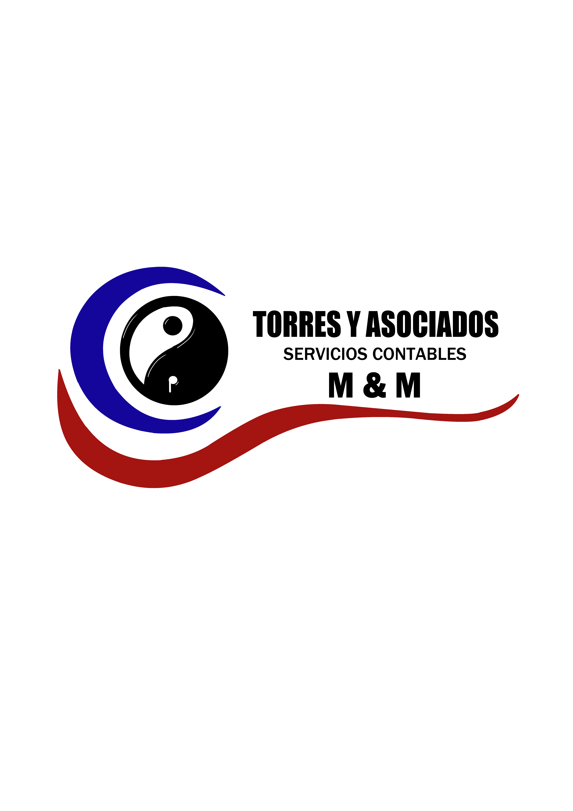

En este isotipo de logo, se intentaba demostrar lo que seria una pasteleria pero con la tematica que se vea que todos los productos o su gran mayoria son dulces
Este isologo fue un pedido para una pequeña empresa que se dedica a la contabilidad; todo fue un diseño previo visualizado por el dueño y sus gustos.
